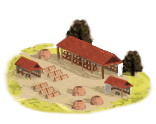
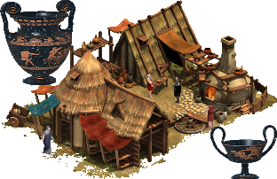

Imperium
Imperium Pottery Kiln (Urban) chain
3 levels, each replacing the one before it — you upgrade in place rather than building alongside.
Pottery Kiln (Urban) → Amphora Maker (Urban) → Fine Pottery Factory (Urban)
Pictures are the game's own building art. Where a culture ships none of its own, the game falls back to another culture's, and that is what is shown here.
Levels at a glance
| Level | Cost | Build time | Minimum settlement | Upgrades to | Level | Cost | Build time | Minimum settlement | Upgrades to | ||
|---|---|---|---|---|---|---|---|---|---|---|---|
| Pottery Kiln (Urban) | 1,500 | 2 | large town | Amphora Maker (Urban) | Amphora Maker (Urban) | 4,500 | 5 | city | Fine Pottery Factory (Urban) | ||
 | Fine Pottery Factory (Urban) | 7,500 | 9 | large city | — |
Costs in denarii, build time in turns.
Amphora Maker (Urban)

A large pottery industry has been established, meeting demand for both form and function.
Now we’re talking! Amphoras, vases, and… slightly fewer cracks!
The potter’s trade, an unglamorous but indispensable art, is blossoming here. How else would our wine flow, our olive oil stay fresh, or our garum be transported without the potter’s sturdy handiwork? The great Butades of Sicyon himself once immortalized his daughter’s lover in clay, the first portrait bust born from his love-struck inspiration. Yet, for all their skill, the potters are no heroes in song or tale; their toil is quiet, steady, vital.
The utility of the potter is less important than the shiny trinket of the goldsmith: an indictment of our people fall from virtue.
Now, with expanded workshops and larger kilns, pottery production is booming. The shelves fill with amphoras, jugs, and vases, practical and decorated with care. This town will never lack for storage or beauty again!
| Cost | 4,500 denarii | Build time | 5 turns | Minimum settlement | city |
| Upgrades to | Fine Pottery Factory (Urban) |
What it does
- +2 trade income
- +10 taxable income
Pottery Kiln (Urban)

A modest pottery workshop been set up, supplying local markets with sturdy, if modest, ceramics.
It's not much, but it holds water!
The potter stands proudly, surveying his simple wares, his clay-streaked hands testament to his work. Next to him, his rival's hastily-made pots wobble, clearly born from the hands of one who rushes.
The soft clay clings to the ground and hands in equal measure, staining each with its earthy smell and smooth texture. Meanwhile the kiln grumbles after its escaping hot air, while within the semi-finished product bakes itself.
On the bench, the weary slave concentrates on his important task. The brush-strokes, firm, regular and artistic. Uniformity an ideal rather than a practice. At least that rather than entirely absent.
In this region, pottery is in its infancy. The small workshop bustles, producing wares that, while perhaps lacking in beauty, serve their purpose. Just try not to drop anything!
| Cost | 1,500 denarii | Build time | 2 turns | Minimum settlement | large town |
| Upgrades to | Amphora Maker (Urban) |
What it does
- +10 taxable income
Fine Pottery Factory (Urban)

A massive pottery industry is thriving, turning this region famous for being a beacon of ceramic excellence, and even kings and queens have been known to seek out our wares.. The kilns are at full blaze, and the pottery flows like an endless river of art and function.
From humble clay to grand amphoras, this region now produces the finest wares, admired across the lands!
Pottery production has reached its peak here, with beautiful, intricate designs gracing everyday items. These wares now grace the tables of nobles and are gifted across distant lands.
The artisans pour their souls into the clay, transforming mere mud into delicate treasures. From robust storage vessels to artful wine jugs, each pot bears witness to the skill of its maker.
If it's clay, we certainly make it.
| Cost | 7,500 denarii | Build time | 9 turns | Minimum settlement | large city |
What it does
- +3 trade income
- +15 taxable income